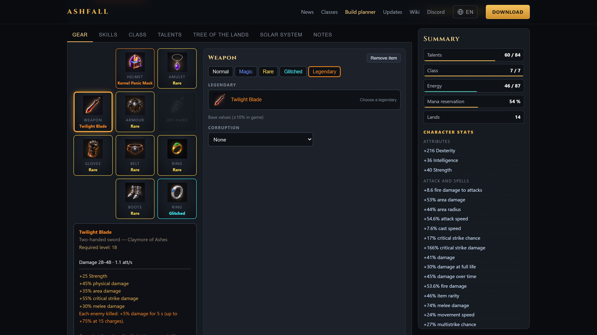
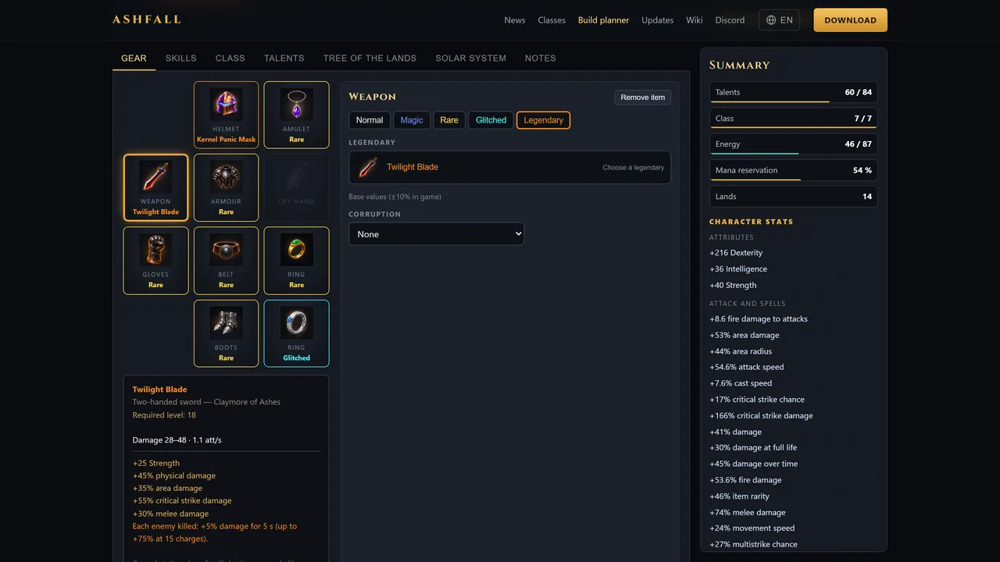
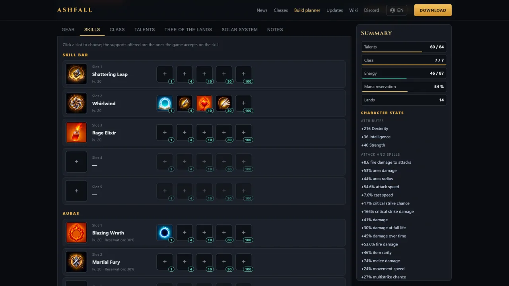
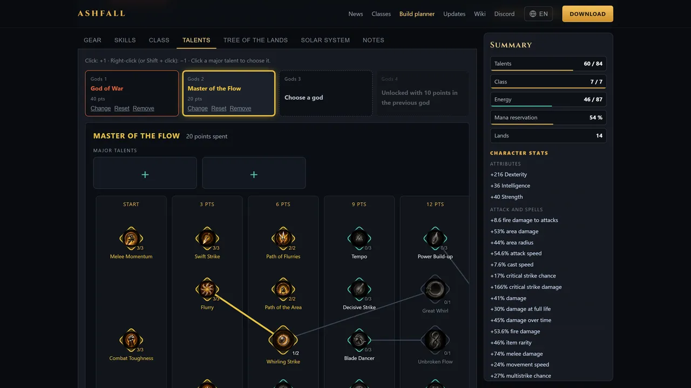
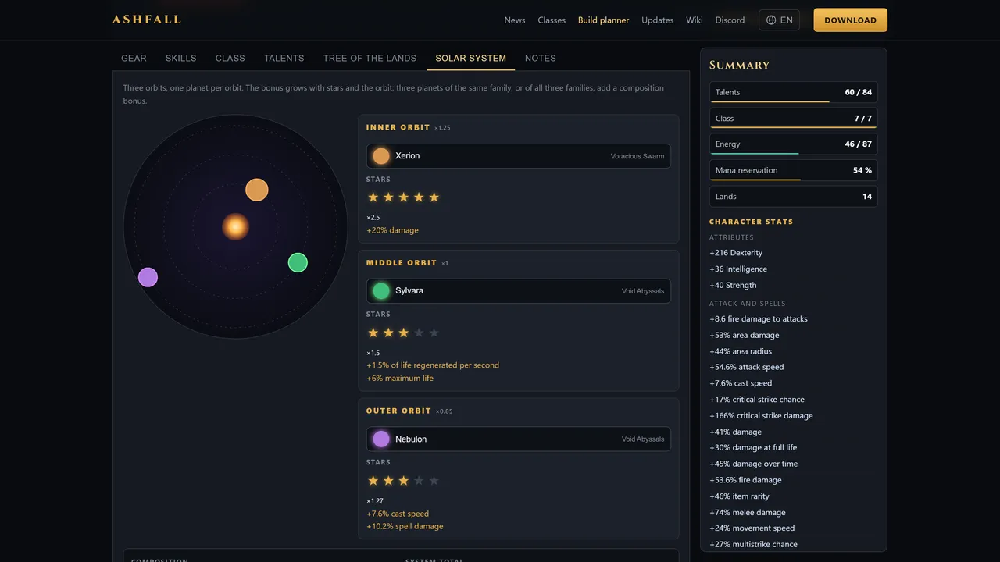

The build planner is live
Plan your character on the site: gear, skills and supports, class, talents, Tree of the Lands and solar system, with the game's real rules.
The whole character, in one place
The build planner gathers everything that makes an Ashfall character: the gear of the ten slots, the skill bar with its supports, the auras, the Runecarver's runes, the class tree, the gods and their major talents, the Tree of the Lands and the solar system. Choose a class and a level, and the rest follows: talent points, class points, slots and gem levels.

The item you are aiming for
For each slot, choose the rarity, the base and the item level: only the tiers available at that level are offered, with their value ranges. Prefixes and suffixes follow the game's limits (3 and 3, at most 2 special and 2 ultimate). Add energy, a corruption or a glitched affix, or pick a legendary directly: the preview uses the game's own tooltip.
Skills and supports
Only the supports the game accepts on a skill are offered, with the energy cost of each slot. Auras compute their reservation as in the game (aura supports, reduced reservation or reserved on life) and add their stats to the summary.

Talents, Lands and stars
The god trees follow the game's rules: column thresholds, prerequisites at maximum rank, a second god opened at 10 points. The Tree of the Lands shows its map bonuses separately, and the solar system computes each orbit's bonus from the planet's stars and the families' composition.

A summary that checks everything
On the right, the summary adds up the stats from every source — hover over a line to see where it comes from — and flags what would not work in the game: too many points, not enough energy, a required level too high, a weapon required by a skill.

Save and share
Your builds stay in your browser: create as many as you like, duplicate them, rename them. Copy link gives an address that reopens the build for anyone, ideal for the Discord; Export code gives the same thing as text. The data comes straight from the game, in English and French.